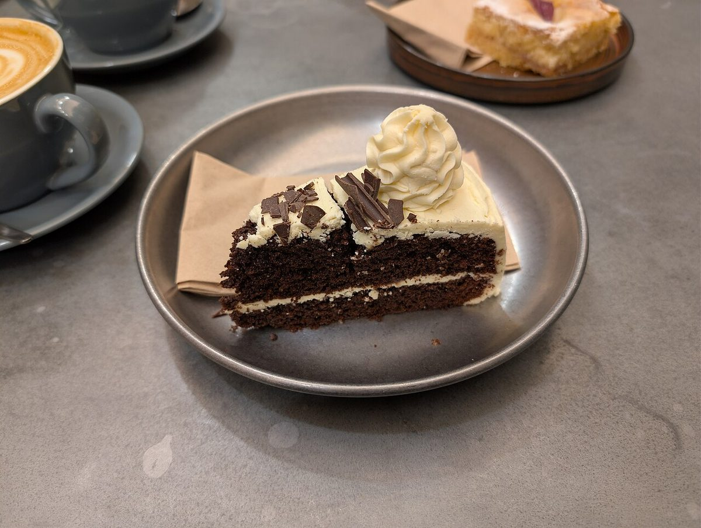

COFFEE STAND / 石川県輪島市
SMOCO
能登の空の玄関口で、ひと息つく一杯を。
ABOUT
お店のこと
- 2022年8月、石川県穴水町でオープンしたコーヒースタンドです。
- 令和6年能登半島地震のあと、のと里山空港の仮設飲食店街「NOTOMORI」で営業を再開しました(2024年11月)。
- オーナーは「少しでも多くのお客様に癒されるお店でありたい」という思いでコーヒーを淹れていると紹介されています。
- コーヒーのほか、焼き菓子なども紹介されています。
上の内容は、地域情報サイトや紹介記事の記載をもとにしています。店名の意味は確認できていないため、このページでは触れていません。

MENU
メニュー
コーヒーを中心に、ラテ類・ジュース・焼き菓子などが紹介されています。価格・内容は時期により変わるため、このページでは「準備中」とし、最新はInstagramでご確認ください。

コーヒー・エスプレッソ
価格: 準備中

ラテ類
価格: 準備中

焼き菓子
価格: 準備中




写真はすべてフリー素材のイメージで、実際の商品ではありません。
VOICE
口コミ(イメージ例)
以下は制作側が作成したイメージ例で、実在のお客様の声ではありません。
イメージ例
空港のそばでひと休みできる場所があって助かります。温かいコーヒーで気持ちがほっとしました。
イメージ例
ラテとお菓子を、のんびり食べながら一息。テイクアウトもできそうで、旅の途中にも寄りやすそうです。
イメージ例
落ち着いた雰囲気で、コーヒーの香りが良かったです。また能登に来たら立ち寄りたいです。


ACCESS
アクセス
| 住所 | 〒929-2372 石川県輪島市三井町洲衛１０−１１ |
|---|---|
| 電話 | 準備中 |
| 営業時間 | 準備中 |
| 定休日 | 準備中 |
| @smoco_noto_2022 |
のと里山空港内の仮設飲食店街での営業と紹介されていますが、仮設施設のため場所や営業状況は変わる可能性があります。お出かけ前にInstagramでご確認ください。